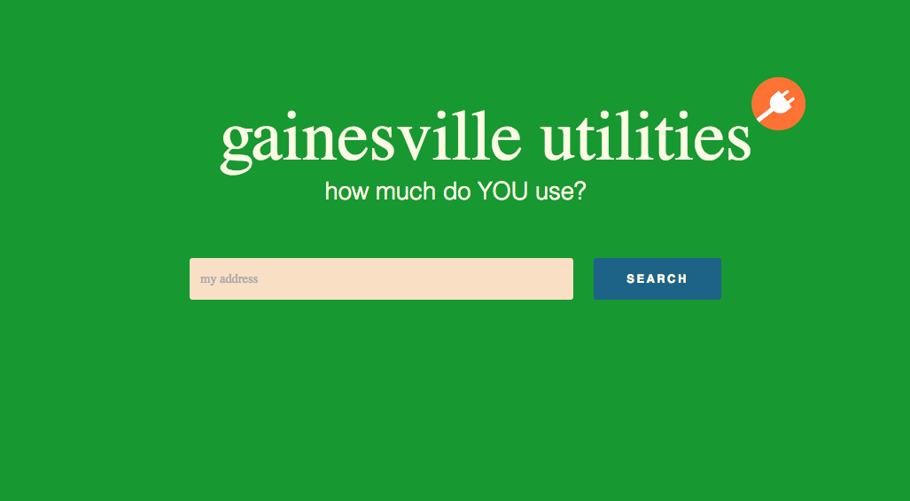
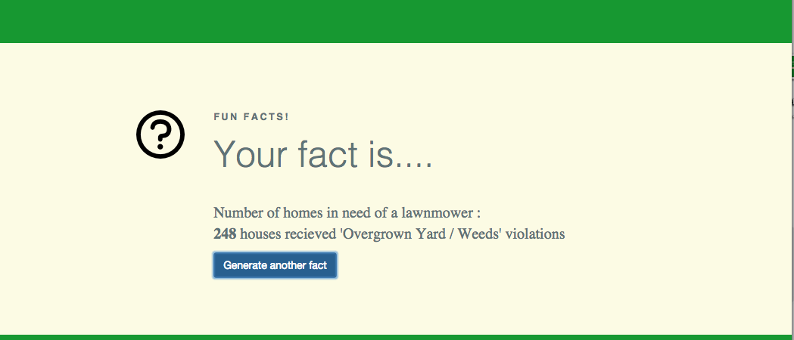
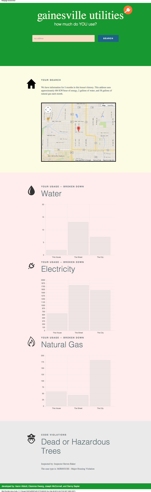

DESCRIPTION.
The Gainesville Utilities Lookup was a group project for my Introduction to Databases course at UF. It takes information from the city of Gainesville's data portal to allow users to lookup any address and find their electricities, water, and fuel usages -- as well as if they have any code violations. It takes information from over 30,000 houses, resulting in over 120,000 pieces of data.
SEE IT.
  READ IT.
~ the code